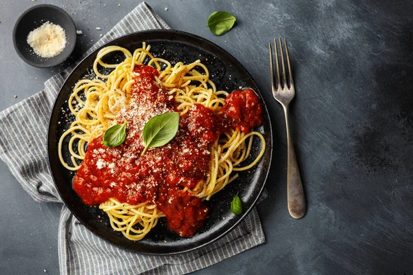

Pasta is a type of food typically made from an unleavened dough of wheat flour mixed with water or eggs, and formed into sheets or other shapes, then cooked by boiling or baking. Pasta was traditionally only made with durum, although the definition has been expanded to include alternatives for a gluten-free diet, such as rice flour, or legumes such as beans or lentils. While Asian noodles originated in China, pasta is believed to have developed independently in Italy and is a staple food of Italian cuisine, with evidence of Etruscans making pasta as early as 400 BCE in Italy.
Melt the butter in a saucepan, add the flour and stir to make a roux. Cook for a minute or two, then start gradually adding the milk, stirring constantly to incorporate it into the sauce.
Stir in the garlic powder, mustard powder and salt. Once all the milk has been added you can stir in the grated Parmesan and season with freshly grated nutmeg. Set the sauce aside so it can cool down and thicken.
Preheat the air fryer to 180°C / 350°F for 3 minutes. Add olive oil to a pan that fits in your air fryer (I used my Tefal ingenio pots that have removable handles). Stir in the ground beef, garlic powder, salt and Italian seasoning. Cook for 3-5 minutes, or until the beef is browned.
Stir in the marinara sauce and cook for about 10 minutes, stirring halfway, or until the sauce is bubbling.
Grease an 8-inch square baking dish (or anything of similar size that fits in your air fryer) with olive oil. Add a layer of meat sauce and spread it to cover the bottom of your dish.
Top with lasagna noodles, cutting them to fit as needed. Spread another layer of meat sauce over the pasta then spoon some of the white sauce over it. Sprinkle with a little mozarella and repeat until you have used all of the red sauce.
Use all the remaining white sauce to top the lasagna then sprinkle with grated Parmesan and mozzarella cheese.
Cover the top of the lasagna with foil, making sure it is either clipped or wrapped around the bottom of your dish so it doesn’t fly off.
Cook for 25 minutes at 180°C (350°F) then carefully remove the foil and continue to cook for a further 5-10 minutes at 160° (325°F), checking to make sure the top is not browning too quickly.